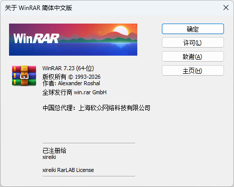

如何免费无广告使用官方WinRAR？
引言
WinRAR 是老牌压缩软件了，从 DOS 时代一路活到今天，凭借出色的压缩率、稳定的表现以及对 RAR 格式的原生支持，至今仍是不少 Windows 用户装完系统后第一批必装的软件。
但它是共享软件，官方只提供 40 天试用期。试用期结束后虽然还能照常使用，可每次启动都会先弹出一个要求购买许可的提醒窗口，而且从 WinRAR 下载的发行版不管有没有获取许可都会夹带广告，总是令人恼火。而网上流传的各种“破解版”“绿色版”“去广告版”，都是第三方修改的版本，我们不知道发布这些破解版的作者是为了什么，不管是真的践行互联网的共享精神，还是为了植入抠门，总归是有一定风险的，但为了这么点广告和弹窗去花钱购买许可又非常不值得。
在机缘巧合之下，我发现了一个 Github 项目，公开了官方许可的生成方法，在此分享给大家。
如果只想获得可以使用的许可，可以点击我下载许可，导入 WinRAR 即可，这是导入方法和去广告版本下载方法（官方）
导入完成后，在关于界面可以看到许可对象：

折腾过程
笔者在日常逛 Github 的时候无意间发现了许可的生成方法，虽然笔者不使用 WinRAR，但是笔者还是怀着研究的心理，尝试克隆了项目并手动编译了生成器，并生成了一个授权文件。于是笔者想安装最新版本（7.23）的中文商业版，但是根据该项目的介绍推导出链接后访问 404 了，多次尝试均无果，抱着死马当做活马医的心态使用了项目介绍的推导软件，仍然失败了。经过笔者半个小时的搜寻，发现从 7.20 开始，官方不再隐藏商业版的下载链接了……
下面的是该项目的编译流程和使用方法
编译流程
克隆或下载项目源码
1
git clone https://github.com/bitcookies/winrar-keygen && cd winrar-keygen
安装构建依赖
1
2sudo apt-get update
sudo apt-get install -y build-essential cmake libgmp-dev编译
1
2
3mkdir build && cd build
cmake .. -DCMAKE_BUILD_TYPE=Release
cmake --build . --config Release查看构建产物
1
./winrar-keygen --help
使用方法
生成 rarreg.key 授权文件
1
./winrar-keygen "<自定义用户名>" "<自定义许可证名称>"
Tips: 请将上面引号内的文本替换为你自己喜欢的名称
导入
参见导入方法
导入方法
WinRAR license（授权文件） 有 rarreg.key 和 rarkey.rar 两种类型，它们仅在导入上有区别：
| 拖动导入或放于指定位置 | 双击运行自动导入 |
这里提供的是前者，你可以将提供的文件直接拖入已打开的 WinRAR 界面导入，你也可以把 rarreg.key 放置于以下目录中：
1 | APPDATA%\WinRAR\rarreg.key |
或者将 rarreg.key 压缩成 rarkey.rar 然后双击运行，授权导入将会自动进行。
下载官方无广告中文版
简体中文 「商业版」 下载地址：
| 7.23 | winrar-x64-723sc.exe |
| 7.22 | winrar-x64-722sc.exe |
| 7.21 | winrar-x64-721sc.exe |
| 7.20 | winrar-x64-720sc.exe |
| 7.13 | winrar-x64-713sc.exe · rrlb winrar-x64-713sc.exe · wrr |
Tips: 从 7.20 开始，官网不再隐藏商业版下载地址，7.13 有两个构建（rrlb / wrr），按需选择即可，没有区别。